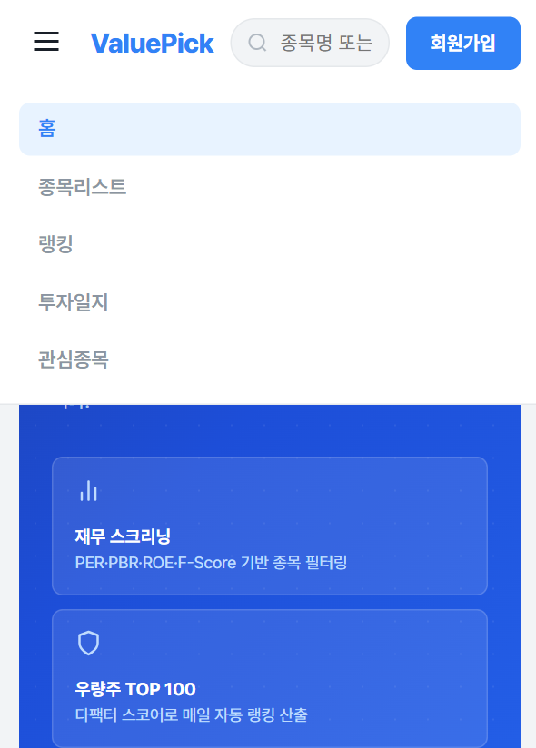
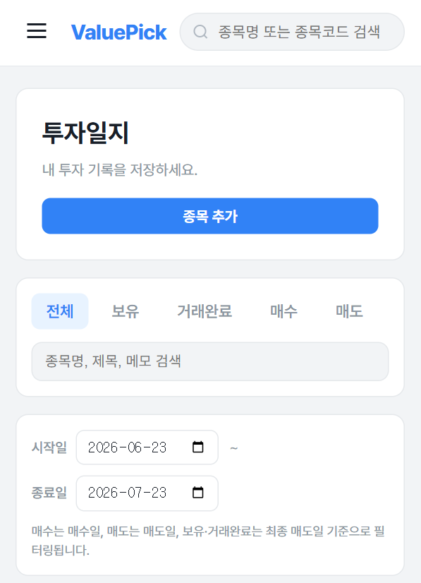
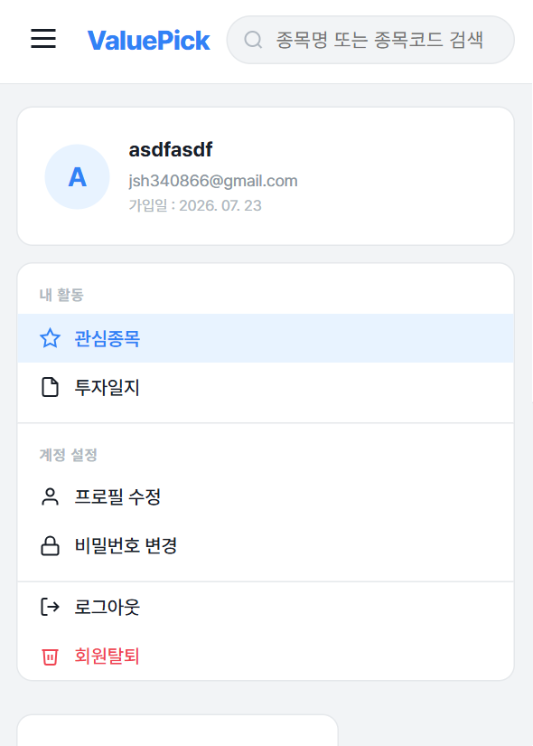

데이터가 정확히 쌓이고
서비스가 매일 같은 시간에
정확히 도는 백엔드를 만듭니다
백엔드 개발자 정승원입니다. 외부 API 데이터 수집 파이프라인과 스케줄링, 도메인 로직 설계에 관심이 많고, 직접 호출·검증해서 확인한 사실만 코드로 옮기는 걸 원칙으로 삼고 있습니다.
전공이 아닌 개발자로,방향을 바꾼 이유
전공은 토목공학이었지만, 직접 작성한 코드가 의도대로 동작하는 경험에 몰입해 개발자로 진로를 바꿨습니다.
데이터가 안정적으로 쌓이고, 그 위에서 서비스가 매일 같은 시간에 정확히 돌아가는 것에 관심이 많은 백엔드 개발자입니다.
국비 풀스택 개발자 과정에 등록해 Java/Spring 기반 백엔드를 중심으로 학습하며 4인 팀 프로젝트 ValuePick에서 외부 데이터 수집 파이프라인과 스코어링 엔진을 담당했습니다.
외부 API 스펙이나 동작 방식은 문서나 추측이 아니라 실제로 호출한 응답으로 확인한 뒤에만 코드에 반영합니다. DART 계정명 매칭 버그를 표준 코드(account_id) 기반으로 근본 해결한 것도 이런 원칙에서 나온 결과였습니다.
낯선 기술도 문서를 직접 파고들고 실제로 호출·실행해 확인하며 빠르게 적응합니다. 새 기술 스택의 핵심을 빠르게 파악해 바로 프로젝트에 적용합니다.
예상 못한 문제 앞에서 조바심을 내는 편이라, 손부터 대지 않고 로그·데이터를 먼저 확인한 뒤 작은 단위로 나눠 검증하는 습관을 들이고 있습니다.
입사 후 조직의 기술 스택을 빠르게 익혀 1인분 이상의 역할을 해내고, 지시를 기다리기보다 스스로 개선점을 찾아 제안하는 개발자가 되고 싶습니다.
사용 기술
ValuePick 프로젝트와 개인 학습을 통해 다뤄본 기술입니다.
Backend
Frontend
Infra & Etc
자격증
실무 지식을 자격으로도 증명해가고 있습니다.
정보처리기사
국가기술자격 · 정보시스템 개발 전반에 대한 기본 지식 검증
빅데이터분석기사
데이터 전처리·분석·시각화 역량 검증을 위해 준비 중
SQLD
SQL 개발자 자격 · 데이터 모델링과 쿼리 최적화 역량 준비 중
ValuePick
가치투자 지표 기반 종목 스크리닝 서비스 — 4인 팀 프로젝트, 1차 배포 완료
DART·KRX·환율 데이터를 매일 자동 수집해저평가 우량주 TOP100을 추천하는 서비스
DART 재무제표, 공공데이터포털 주가, KRX 지수, 한국수출입은행 환율을 매일 새벽 자동 수집해 PER·PBR·ROE·Piotroski F-Score 등 투자지표를 계산하고, 멀티팩터 가중 스코어링으로 저평가 우량주 TOP100을 추천합니다. 개인 투자일지(매수/매도 기록, 손익 관리) 기능도 함께 제공합니다.
외부 데이터 수집 파이프라인 & 스코어링 엔진
KRX(상장종목)·DART(전자공시)·한국수출입은행(환율) 3종 API를 조인해 기업정보 → 재무제표 → 환율 순으로 수집하는 파이프라인 설계 및 구현
주가 수집 2,700회 → 1회
종목별 개별 호출 구조를, 문서 재확인 후 필수 아니던 필터 파라미터를 제거해 날짜 기준 전 종목 일괄 조회로 전환. 일일 호출 한도 초과 문제를 근본 해결
표준 계정 코드 기반 재무 매칭
"영업이익"/"영업이익(손실)"처럼 회사마다 다른 계정명 표기 때문에 값이 0으로 누락되던 문제를, DART 표준 코드(account_id) 매칭으로 근본 해결
리츠 / 스팩 종목 필터링
contains 매칭의 오탐(예: "메리츠금융지주")을 부동산투자회사법·자본시장법의 상호 표기 규칙 근거로 endsWith/contains를 구분 적용해 화이트리스트 없이 해결


주요 기능
탭을 눌러 화면별 데모를 확인할 수 있습니다.
트러블슈팅 하이라이트
개발하면서 실제로 부딪힌 문제와, 그걸 왜 이렇게 풀었는지입니다.
주가 수집 API 호출 한도 초과
종목별로 개별 호출하다 보니 상장사 약 2,700개 × 하루 1회 호출로 일일 한도를 초과, "API token quota exceeded" 에러 발생
공식 파라미터 문서를 재확인해 종목코드 필터(likeSrtnCd)가 선택 파라미터임을 확인. 날짜(basDt)만 넘기고 numOfRows=4000으로 날짜당 전 종목을 한 번에 조회하도록 전환
재무 데이터가 0으로 누락되는 버그
DART 계정명(account_nm)이 회사마다 "영업이익" / "영업이익(손실)"처럼 표기가 달라, 특정 문자열만 매칭하던 코드가 값을 못 찾고 0으로 저장
실제 API 응답을 다시 호출해 비교한 결과 표기와 무관하게 항상 동일한 표준 계정 코드(account_id)를 발견, 매칭 기준을 자유 텍스트에서 표준 코드로 전환
TOP100 스코어링 N+1 문제
전체 종목 스코어링 시 지연 로딩(LAZY)된 Company 연관관계를 지표 건수만큼 추가 SELECT로 조회
StockIndicator 조회 쿼리를 JOIN FETCH로 재작성해 지표와 Company를 한 번에 로딩
리츠/스팩 종목 오탐 필터링
contains("리츠")로 필터링하면 "메리츠금융지주" 같은 무관한 종목까지 걸려 화이트리스트를 하드코딩 관리해야 했음
부동산투자회사법(리츠 상호 끝에 "리츠" 표기 의무)·자본시장법(스팩 상호에 "스팩" 포함 의무)을 근거로 endsWith/contains를 구분 적용
모바일 화면
반응형으로 모바일 환경에서도 동일한 기능을 제공합니다.



팀원 구성
4인 팀 프로젝트로 진행했습니다.